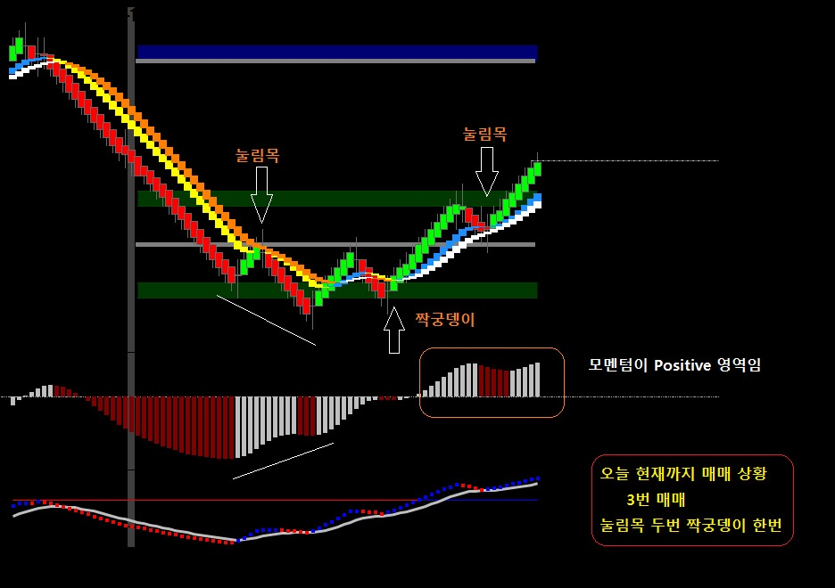
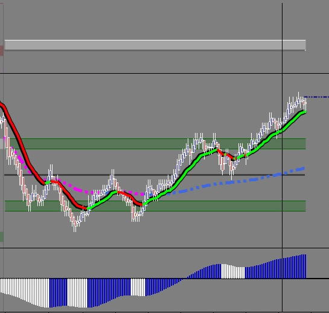
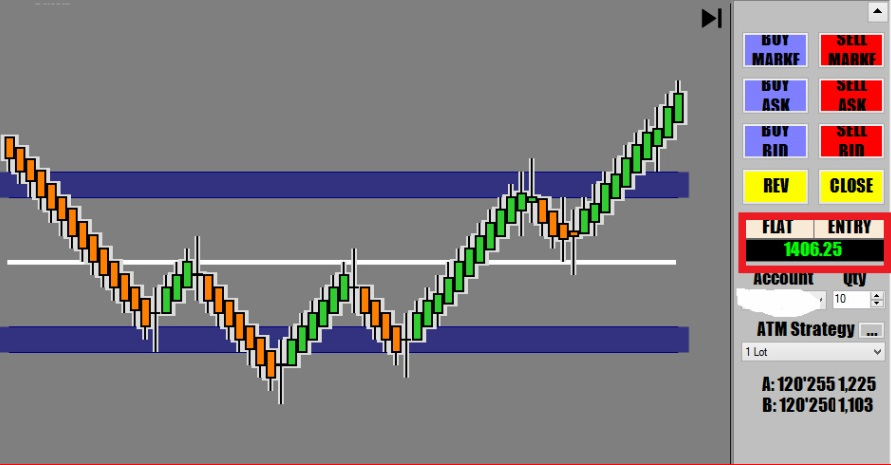

해외선물 - [ZN] 기울기 약하게 진행하는 장세
오늘도 장 시작전에 다우가 300포인트 상승으로 출발합니다
요즘은 채권시장이 증시에 끌려다는 상황인지라 매매하기가 굉장히 어려움
널뛰는 증시 방향을 맞추기가 쉽지않은 상황임
밤샘매매를 해서 현재까지 3번 매매중

이거 올리는 동안에 매매선타고 계속 올라갔습니다.
저같은 스캘퍼들이 제일 어려워하는 장세
기울기 약하게 계속 야금야금 진행하는 장세..

지금시간 오전 9시40분입니다
오늘은 ZB가 날아다녔는데 ZN을 매매했습니다..ㅋㅋ
밤생을 했더니 이제 졸려서 이걸로 마감해야 겠습니다
다우는 400포인트나 올랐군요.
오늘 수익은 $1406.25 입니다
